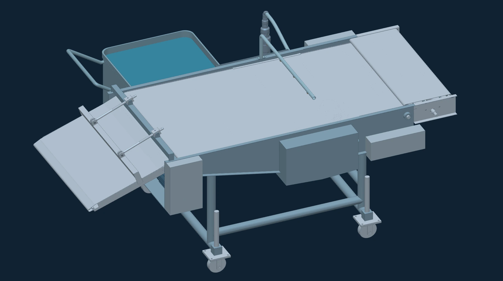
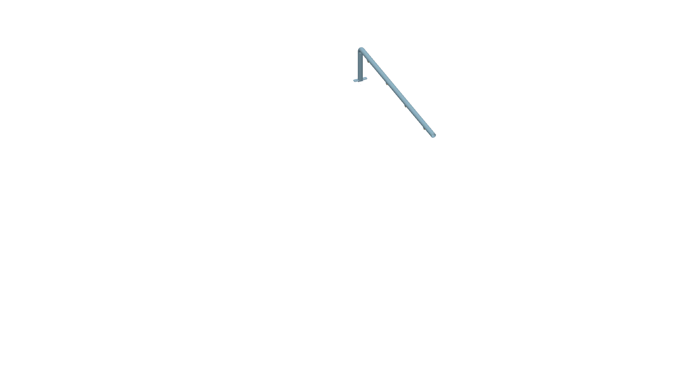

คำนวณความเร็วสายพาน Glazing
IVQF Spray Conveyor · ตั้งความถี่แยกได้ตั้งแต่ 5 Hz
กรอกความถี่ตั้งแต่ 5 Hz ขึ้นไป
กรอกความถี่ตั้งแต่ 5 Hz ขึ้นไป
จำลองการเดินสายพาน
ลูกศรและลายตะแกรงเคลื่อนตามความเร็วที่คำนวณได้
ขาออก · สายพานท้าย
ขาเข้า · สายพานหน้า
←ทิศทางจากขวาไปซ้าย


เวลาผ่านช่วงพ่น
วัดระยะตามแนวสายพาน แล้วเลือกความเร็วที่ใช้ในช่วงพ่น
กรอกระยะพ่นมากกว่า 0 เมตร
ค่าอ้างอิงและสูตรคำนวณ
| ความถี่ | สายพานหน้า | สายพานท้าย |
|---|---|---|
| 20 Hz | 12.57 m/min · 0.209 m/s | 7.14 m/min · 0.119 m/s |
| 50 Hz | 32.20 m/min · 0.536 m/s | 18.55 m/min · 0.309 m/s |
เทียบเชิงเส้นจากจุดวัดสองจุดแยกตามสายพาน โดย v = v₂₀ + (Hz − 20) × (v₅₀ − v₂₀) ÷ 30 ค่าต่ำกว่า 20 Hz หรือสูงกว่า 50 Hz เป็นค่าประมาณนอกช่วงวัด
ใช้ m/min เป็นค่าหลัก แปลงเป็น m/s โดยหาร 60 แล้วตัดที่ทศนิยม 3 ตำแหน่งให้ตรงกับข้อมูลอ้างอิง ภาพจำลองและเวลาผ่านช่วงพ่นใช้ค่าก่อนตัดทศนิยม
เวลาผ่านช่วงพ่น (วินาที) = ระยะพ่นตามแนวสายพาน (m) ÷ ความเร็วสายพาน (m/s) โดยถือว่าความเร็วคงที่ตลอดช่วงพ่น